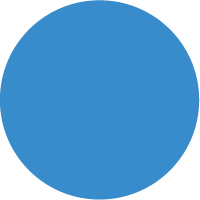

Plano PI Digital
Documentação
ÚLTIMA ATUALIZAÇÃO
05/07/2020

Início
Plano
Compromisso
Relatório Trimestral I
Governança
Cronograma
Seleção
Atendimento
Carta de Serviços
Diagnóstico de Transformação
Fluxo de Retribuições
Comunicação
Usabilidade do Portal
Minha Primeira Patente
Cronograma de Lançamento do Novo Portal
Interoperabilidade
Plano de Dados Abertos
Login Único
ConectaGov
Infraestrutura
Módulo E-Chip